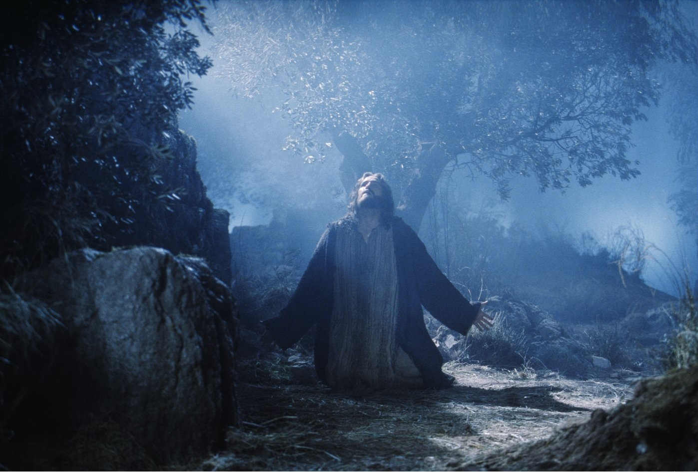

扫描二维码关注"BCBCSermon"
公共号收听更多信息


音频： 下载
经文：
35 耶 稣 又 对 他 们 说 ： 我 差 你 们 出 去 的 时 候 ， 没 有 钱 囊 ， 没 有 口 袋 ， 没 有 鞋 ， 你 们 缺 少 甚 麽 没 有 ？ 他 们 说 ： 没 有 。
36 耶 稣 说 ： 但 如 今 有 钱 囊 的 可 以 带 着 ， 有 口 袋 的 也 可 以 带 着 ， 没 有 刀 的 要 卖 衣 服 买 刀 。
37 我 告 诉 你 们 ， 经 上 写 着 说 ： 他 被 列 在 罪 犯 之 中 。 这 话 必 应 验 在 我 身 上 ； 因 为 那 关 系 我 的 事 必 然 成 就 。
38 他 们 说 ： 主 阿 ， 请 看 ！ 这 里 有 两 把 刀 。 耶 稣 说 ： 够 了 。
39 耶 稣 出 来 ， 照 常 往 橄 榄 山 去 ， 门 徒 也 跟 随 他 。
40 到 了 那 地 方 ， 就 对 他 们 说 ： 你 们 要 祷 告 ， 免 得 入 了 迷 惑 。
41 於 是 离 开 他 们 约 有 扔 一 块 石 头 那 麽 远 ， 跪 下 祷 告 ，
42 说 ： 父 阿 ！ 你 若 愿 意 ， 就 把 这 杯 撤 去 ； 然 而 ， 不 要 成 就 我 的 意 思 ， 只 要 成 就 你 的 意 思 。
43 有 一 位 天 使 从 天 上 显 现 ， 加 添 他 的 力 量 。
44 耶 稣 极 其 伤 痛 ， 祷 告 更 加 恳 切 ， 汗 珠 如 大 血 点 滴 在 地 上 。
45 祷 告 完 了 ， 就 起 来 ， 到 门 徒 那 里 ， 见 他 们 因 为 忧 愁 都 睡 着 了 ，
46 就 对 他 们 说 ： 你 们 为 甚 麽 睡 觉 呢 ？ 起 来 祷 告 ， 免 得 入 了 迷 惑 ！
47 说 话 之 间 ， 来 了 许 多 人 。 那 十 二 个 门 徒 里 名 叫 犹 大 的 ， 走 在 前 头 ， 就 近 耶 稣 ， 要 与 他 亲 嘴 。
48 耶 稣 对 他 说 ： 犹 大 ！ 你 用 亲 嘴 的 暗 号 卖 人 子 麽 ？
49 左 右 的 人 见 光 景 不 好 ， 就 说 ： 主 阿 ！ 我 们 拿 刀 砍 可 以 不 可 以 ？
50 内 中 有 一 个 人 把 大 祭 司 的 仆 人 砍 了 一 刀 ， 削 掉 了 他 的 右 耳 。
51 耶 稣 说 ： 到 了 这 个 地 步 ， 由 他 们 罢 ！ 就 摸 那 人 的 耳 朵 ， 把 他 治 好 了 。
52 耶 稣 对 那 些 来 拿 他 的 祭 司 长 和 守 殿 官 并 长 老 说 ： 你 们 带 着 刀 棒 出 来 拿 我 ， 如 同 拿 强 盗 麽 ？
53 我 天 天 同 你 们 在 殿 里 ， 你 们 不 下 手 拿 我 。 现 在 却 是 你 们 的 时 候 ， 黑 暗 掌 权 了 。
54 他 们 拿 住 耶 稣 ， 把 他 带 到 大 祭 司 的 宅 里 。 彼 得 远 远 的 跟 着 。
55 他 们 在 院 子 里 生 了 火 ， 一 同 坐 着 ； 彼 得 也 坐 在 他 们 中 间 。
56 有 一 个 使 女 看 见 彼 得 坐 在 火 光 里 ， 就 定 睛 看 他 ， 说 ： 这 个 人 素 来 也 是 同 那 人 一 夥 的 。
57 彼 得 却 不 承 认 ， 说 ： 女 子 ， 我 不 认 得 他 。
58 过 了 不 多 的 时 候 ， 又 有 一 个 人 看 见 他 ， 说 ： 你 也 是 他 们 一 党 的 。 彼 得 说 ： 你 这 个 人 ！ 我 不 是 。
59 约 过 了 一 小 时 ， 又 有 一 个 人 极 力 的 说 ： 他 实 在 是 同 那 人 一 夥 的 ， 因 为 他 也 是 加 利 利 人 。
60 彼 得 说 ： 你 这 个 人 ！ 我 不 晓 得 你 说 的 是 甚 麽 ！ 正 说 话 之 间 ， 鸡 就 叫 了 。
61 主 转 过 身 来 看 彼 得 。 彼 得 便 想 起 主 对 他 所 说 的 话 ： 今 日 鸡 叫 以 先 ， 你 要 三 次 不 认 我 。
62 他 就 出 去 痛 哭 。
63 看 守 耶 稣 的 人 戏 弄 他 ， 打 他 ，
64 又 蒙 着 他 的 眼 ， 问 他 说 ： 你 是 先 知 ， 告 诉 我 们 打 你 的 是 谁 ？
65 他 们 还 用 许 多 别 的 话 辱 骂 他 。
66 天 一 亮 ， 民 间 的 众 长 老 连 祭 司 长 带 文 士 都 聚 会 ， 把 耶 稣 带 到 他 们 的 公 会 里 ，
67 说 ： 你 若 是 基 督 ， 就 告 诉 我 们 。 耶 稣 说 ： 我 若 告 诉 你 们 ， 你 们 也 不 信 ；
68 我 若 问 你 们 ， 你 们 也 不 回 答 。
69 从 今 以 後 ， 人 子 要 坐 在 神 权 能 的 右 边 。
70 他 们 都 说 ： 这 样 ， 你 是 神 的 儿 子 麽 ？ 耶 稣 说 ： 你 们 所 说 的 是 。
71 他 们 说 ： 何 必 再 用 见 证 呢 ？ 他 亲 口 所 说 的 ， 我 们 都 亲 自 听 见 了 。
扫描二维码关注"BCBCSermon"
公共号收听更多信息